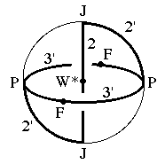
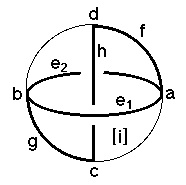

214
214
 216
216 Orbifold Atlas Home Page
Orbifold Atlas Home Page
 Crystallographic Topology Home Page
Crystallographic Topology Home Page
Underlying Topological Space: D3; Figure Pseudo-Symmetry (FPS): 2/m
Euclidean 3-Orbifold with Invariant-Lattice-Complex Letters
(left), Wyckoff Site Letters (right)
 
| FPS | Mult | Lattice Comp | Group Graph | Wyckoff Set | 2[4]Cover |
| 1-2 | P | 3'3'2' | a, b | ||
| 3-2 | J | 22' | c, d | ||
| 4-2 | P4[F]P4 | 3'2'<3'>4'2 | e1:a-b, e2:b-a | ||
| 6-2 | P6[-]J2 | 3'3'<2'>2 | f:a-d, g:b-c | ||
| 12-1 | J4[W*]J4 | 2'<2>2' | h:c-d | ||
| 12-1 | m | i:efg | |||
| 24 | 1 | j:h,i | |||
| 12-2 | P12[-]J4 | 2*=3'3'2'<1'>22' | i1:a-c, i2:b-d | #221(i,j) | |
| 2 | 24-2 | F6[-]W*2 | 2*=3'3'<1>22 | j1:e1-h, j2:e2-h | #224(i) |
| m | 24-2 | m* | j3:ghi2, j4:fhi1 | #221(k,l) | |
| Struct-Mult | Critical Points | Heegaard Surf | Wyckoff Cut |
| Scub-1s | P/J/J/P | H3'3'm{2} | h e1 e2 |
214
216
Orbifold Atlas Home Page
Crystallographic Topology Home Page
Page last revised: